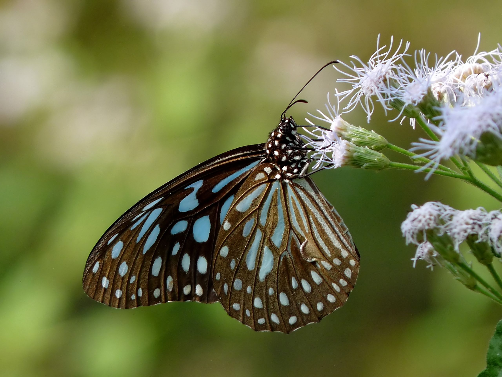
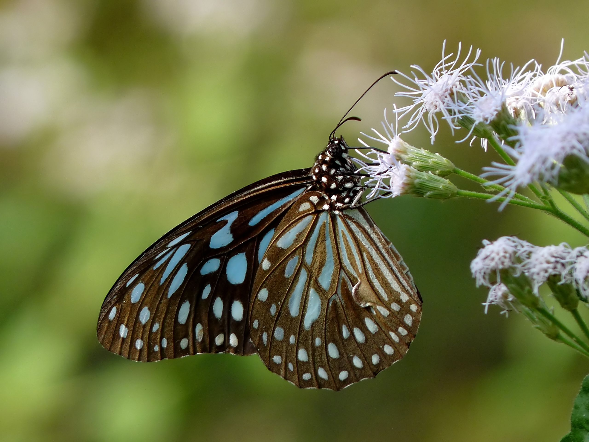

Butterfly, (superfamily Papilionoidea), any of numerous species of insects belonging to multiple families. Butterflies, along with the moths and the skippers, make up the insect order Lepidoptera. Butterflies are nearly worldwide in their distribution
The wings, bodies, and legs, like those of moths, are covered with dustlike scales that come off when the animal is handled. Unlike moths, butterflies are active during the day and are usually brightly coloured or strikingly patterned. Perhaps the most distinctive physical features of the butterfly are its club-tipped antennae and its habit of holding the wings vertically over the back when at rest. The lepidopteran life cycle has four stages: egg, larva (caterpillar), pupa (chrysalis), and adult (imago). The larvae and adults of most butterflies feed on plants, often only specific parts of specific types of plants.
Butterflies are often polymorphic, and many species make use of camouflage, mimicry and aposematism to evade their predators. Some, like the monarch and the painted lady, migrate over long distances. Many butterflies are attacked by parasites or parasitoids, including wasps, protozoans, flies, and other invertebrates, or are preyed upon by other organisms. Some species are pests because in their larval stages they can damage domestic crops or trees; other species are agents of pollination of some plants. Larvae of a few butterflies (e.g., harvesters) eat harmful insects, and a few are predators of ants, while others live as mutualists in association with ants. Culturally, butterflies are a popular motif in the visual and literary arts.

Many butterflies, such as the painted lady, monarch, and several danaine migrate for long distances. These migrations take place over a number of generations and no single individual completes the whole trip. The eastern North American population of monarchs can travel thousands of miles south-west to overwintering sites in Mexico. There is a reverse migration in the spring. It has recently been shown that the British painted lady undertakes a 9,000-mile round trip in a series of steps by up to six successive generations, from tropical Africa to the Arctic Circle almost double the length of the famous migrations undertaken by monarch. Spectacular large-scale migrations associated with the monsoon are seen in peninsular India. Migrations have been studied in more recent times using wing tags and also using stable hydrogen isotopes.
 
